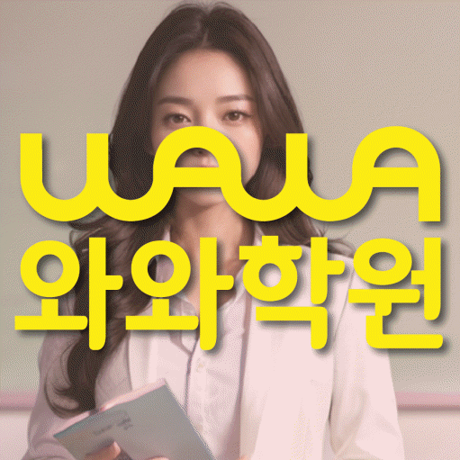

ENGLISH · MATH
청라 영수학원
청라 영수학원 선택 전 영어 오답 유형·개념 연결 진단, 학교 자료, 가능 학년과 센터 위치를 확인하세요. 실제 교재로 상담할 질문도 정리했습니다.
01 Quick answer
청라 초·중·고 영어·수학 학습에서 먼저 확인할 핵심 답변
청라 영수학원을 비교할 때는 진도보다 영어 오답 유형과 개념 연결이 실제 학습에서 어떻게 드러나는지 먼저 확인해야 합니다. 센터 정보와 학습 자료를 함께 보면 확인된 사실, 상담에서 물을 조건과 학생의 학습 과제를 구분할 수 있습니다.
확인 기준
청라 초·중·고 학생 상담에서는 영어 오답 유형·개념 연결의 현재 상태를 실제 자료에서 나누어 확인합니다.


 010-6839-8283
010-6839-8283학습 답변 요약
청라 초·중·고 영어·수학 학습 자료를 기준으로 진단, 학습 순서, 학교·센터 사실과 상담 질문을 차례로 살펴봅니다.
청라 영수학원 상담 전에 확인할 첫 근거
청라 영수학원 상담은 학생이 막힌 장면을 구체적으로 설명하는 데서 시작합니다. 영어 오답 유형은 현재 자료에서 확인하고 개념 연결은 다시 수행한 기록으로 비교하는 편이 좋습니다.
학부모는 학생 대신 원인을 단정하지 말고 어휘·문법·독해 중 어디에서 같은 실수가 이어지는지를 질문으로 바꾸어 적어 두는 편이 좋습니다. 학생의 설명과 실제 자료가 일치하는지를 상담에서 비교할 수 있습니다. 청라에서 초·중·고 영어·수학 학습을 알아볼 때도 확인된 자료와 상담 질문을 구분합니다.
영어 오답 유형과 개념 연결을 나누는 청라 초·중·고 영어·수학 기준
청라에서 학습 계획을 세울 때는 학생이 이미 아는 내용과 혼자 적용하지 못하는 내용을 나눕니다. 어휘·문법·독해 중 어디에서 같은 실수가 이어지는지를 확인한 다음 정의와 공식을 말로 설명한 뒤 문제에 적용하는지를 별도로 살펴보세요.
와와학습코칭센터 청라점에 문의할 때는 설명 방식, 독립 연습과 피드백 주기를 함께 물어보세요. 실제 수업 시간과 반 편성은 센터의 현재 운영 범위에 따라 달라질 수 있습니다. 현재 자료를 비교하는 청라 초·중·고 영어·수학 과정에서도 이 항목을 별도로 확인합니다.
청라 영수학원에서 학교 자료를 상담 근거로 쓰는 방법
청라 영수학원 페이지에 표시된 청라중·해원중·청라고는 상담 준비를 위한 참고 정보입니다. 학교명만으로 수업 가능 여부를 판단하지 말고 학생의 최근 영어·수학 교재·학교 자료·오답 기록을 센터의 현재 개설 범위와 함께 확인해야 합니다.
와와학습코칭센터 청라점의 제공 정보와 학생 학교 자료는 서로 다른 사실입니다. 센터 위치·교습비 경로와 학습 범위·과제 기준을 구분해서 상담 메모에 적어 두세요. 청라 초·중·고 영어·수학 상담 메모에서는 이 내용과 실제 이용 조건을 나누어 적습니다.
청라 초·중·고 학생에게 맞는 영어·수학 점검 기준
청라 영수학원을 우선 살펴볼 학생은 청라에서 초·중·고 영어·수학 상담을 준비하며 영어 오답 유형에서 겪는 어려움과 개념 연결에서 막히는 원인을 구분해 영어·수학 학습 순서를 정해야 하는 초·중·고 학생입니다. 이 표현은 등록을 권하는 기준이 아니라 현재 자료와 상담 질문을 정리하기 위한 학습 상황입니다.
학생이 도움을 요청할 시점과 혼자 다시 해 볼 범위를 정해 두는 편이 좋습니다. 와와학습코칭센터 청라점의 피드백 방식이 이 기준과 맞는지 상담에서 확인하세요. 상담에는 청라 학생의 초·중·고 영어·수학 기록도 함께 가져가세요.
청라 초·중·고 학생에게 맞는 영어·수학 첫 달 실행 순서
청라 영수학원의 4주 계획은 성과를 약속하는 프로그램이 아니라 상담 내용을 정리하는 조건부 예시입니다. 첫 주에는 영어 오답 유형, 둘째 주에는 개념 연결, 이후에는 영어 학습 루틴 기록을 살피고 마지막 점검에서 다음 범위를 조정할 수 있습니다.
실행 기록이 남지 않았다면 새 진도를 늘리기 전에 분량과 방법을 다시 조정합니다. 와와학습코칭센터 청라점의 실제 피드백 주기가 학생 일정과 맞는지도 확인하세요.
청라 영수학원 방문 전에 준비할 네 가지
청라 영수학원 상담 전에는 학생의 실제 자료, 어려웠던 과정과 가능한 일정을 한 장에 정리하세요. 아래 네 항목을 준비하면 학습 문제와 센터 운영 조건을 섞지 않고 질문할 수 있습니다.
학교명과 가능 학년 표기는 참고 자료입니다. 학생의 실제 학교·학년과 희망 과목이 현재 운영 범위에 포함되는지 와와학습코칭센터 청라점에서 재확인하세요.
- 현재 자료청라 영수학원 확인용으로 최근 영어·수학 교재·학교 자료·오답 기록에서 영어 오답 유형과 개념 연결이 드러난 부분을 표시합니다.
- 오답 근거청라 초·중·고 영어·수학 상담에는 첫 풀이와 다시 푼 답 사이에 달라진 근거와 학습 시작 시각과 완료 여부를 적은 주간 기록을 서로 나누어 가져갑니다.
- 가능 일정청라 초·중·고 영어·수학 학습에 필요한 통학 시간, 학교 일정과 가정 복습 시간을 적습니다.
- 센터 확인청라 영수학원 등록 전에는 와와학습코칭센터 청라점의 과목·학년·시간표·교습비·보완 방식을 확인합니다.
02 Parent perspective
청라 초·중·고 영어·수학 학부모 상담 상황
아래 청라 초·중·고 영어·수학 상담 장면은 실제 이용 후기나 특정 학생의 성과가 아닌 준비용 가상 예시입니다. 학습 결과는 학생의 출발점과 실천 정도에 따라 달라질 수 있습니다.
청라에서 초·중·고 영어·수학 학습을 하는 학생이 과제를 마쳐도 같은 어려움을 반복하는 상황을 가정했습니다. 학부모는 첫 풀이와 다시 푼 답 사이에 달라진 근거와 학습 시작 시각과 완료 여부를 적은 주간 기록, 두 자료를 나누어 제시하고 설명이 필요한 부분과 혼자 연습할 부분을 확인합니다.
청라에서 초·중·고 영어·수학 학습 시간이 겹치는 가정의 상담 상황입니다. 학부모는 영어 오답 유형에 집중할 시간과 개념 연결을 복습할 시간을 구분하고 일주일 뒤 어떤 기록으로 계획을 재검토할지 묻습니다.
03 FAQ
청라 초·중·고 영어·수학 자주 묻는 질문
학생 자료, 가능 학년과 실제 이용 조건을 나누어 답했습니다.
청라 초·중·고 영어·수학 상담에서는 무엇을 먼저 진단하나요?
초·중·고 영어·수학 상담에서 사용할 첫 진단 기준입니다. 최근 점수만 보지 말고 어휘·문법·독해 중 어디에서 같은 실수가 이어지는지와 정의와 공식을 말로 설명한 뒤 문제에 적용하는지를 먼저 살핍니다. 청라 학생의 최근 영어·수학 교재·학교 자료·오답 기록을 가져오면 두 항목이 실제 학습에서 어떻게 나타나는지 구분할 수 있습니다.
청라의 초·중·고 영어·수학 가능 학년과 실제 수업 일정은 어떻게 확인하나요?
청라 영수학원 페이지의 제공 센터 사실을 기준으로 답합니다. 제공된 센터 주소는 인천 서구 중봉대로 588 청라센트럴프라자 609입니다. 센터 자료의 과목별 학년 표기는 영어 초3·초4·초5·초6·중1·중2·중3, 수학 초3·초4·초5·초6·중1·중2·중3입니다. 비용 자료는 센터별 교습비 확인 버튼으로 연결됩니다. 제공 학년 정보와 별개로 실제 개설 반, 시간표와 보강 방식은 센터 상담에서 다시 확인하는 것이 정확합니다.
청라 초·중·고 영어·수학 상담 예시를 실제 후기나 성과로 보아도 되나요?
초·중·고 영어·수학 상담 장면을 읽을 때는 출처와 성과 여부를 구분해야 합니다. 페이지의 상담 상황은 실제 이용 후기나 특정 학생의 성과가 아닌 준비용 가상 예시입니다. 학습 결과는 학생의 출발점과 실천 정도에 따라 달라질 수 있으므로 실제 자료와 센터 조건을 확인해 판단하세요. 와와학습코칭센터 청라점의 청라 초·중·고 영어·수학 운영 여부는 상담 시점에 다시 확인합니다.
청라 초·중·고 영어·수학 상담 때 학생은 어떤 자료를 준비하면 좋나요?
초·중·고 영어·수학 상담 자료는 현재 학습 상태를 보여 주는 범위에서 고릅니다. 최근 영어·수학 교재·학교 자료·오답 기록에서 어려웠던 부분을 표시해 가져오면 됩니다. 자료가 많지 않아도 첫 풀이와 다시 푼 답 사이에 달라진 근거와 학습 시작 시각과 완료 여부를 적은 주간 기록을 확인할 수 있으면 학습 순서를 질문하기에 충분합니다. 이 답변은 청라에서 초·중·고 영어·수학 상담을 준비할 때 적용할 수 있습니다.
청라중·해원중·청라고 자료는 청라 초·중·고 영어·수학 계획에 어떻게 반영하나요?
초·중·고 영어·수학 학교 자료 반영 방식은 실제 학생 자료를 기준으로 확인합니다. 학교명 자체보다 학생이 가져온 범위와 현재 교재의 진행 위치를 확인합니다. 영어 오답 유형과 개념 연결이 드러난 부분을 표시해 주간 과제와 복습 순서에 반영되는지 질문하세요. 청라 초·중·고 영어·수학 학습에서는 실제 자료를 확인한 뒤 판단해야 합니다.
04 Related
청라 관련 학원·상담 페이지
같은 지역의 과목 조합과 학년 카테고리, 앞뒤 지역 안내를 함께 확인하세요.